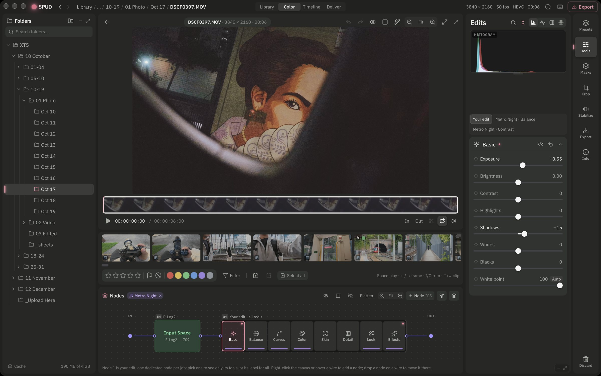
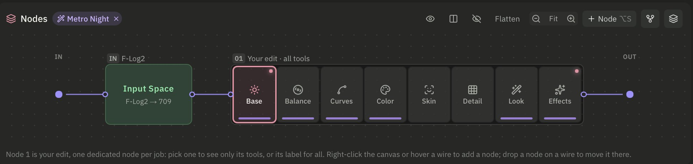
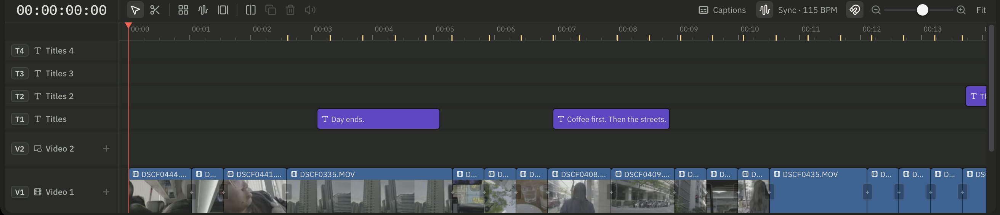

Shot on a potato? Graded on SPUD.
A fast, GPU-accelerated video editor and colour grader for Mac. Grade your clips like a colourist, cut them on a simple timeline, and export straight to Reels, TikTok or YouTube.

A fast, GPU-accelerated video editor and colour grader for Mac. Grade your clips like a colourist, cut them on a simple timeline, and export straight to Reels, TikTok or YouTube.

Every clip gets a fixed set of nodes, each holding only its own tools, so you always know where a change lives. Presets land in the right node too, so a look stays easy to adjust after you apply it. See all 51 built-in looks, before and after.
.cube LUTs
Drag clips in from the library, trim, split and reorder. SPUD finds the beats in your music and snaps cuts to them, so a travel reel comes together in minutes.

Every exported frame goes through the same GPU shaders as the preview, so glow, halation and grain look the same in the file as they did on screen. Pick a platform and SPUD sets the frame, size, frame rate and bitrate for you.
Original size, 4K, 1080p or 720p. Single clips, batches or the whole timeline.
A 16:9 edit reframes to vertical with Fill or Fit. Landscape or portrait canvases at any size.
Edits live in a small sidecar file next to each clip. Delete it and the clip is as it was.
A built-in MCP server lets Claude or any MCP client grade, stabilise, edit and export for you.
Free, signed and notarised by Apple. It updates itself when a new version is out.
Download for Mac